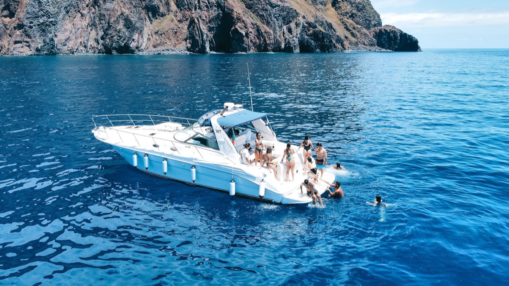
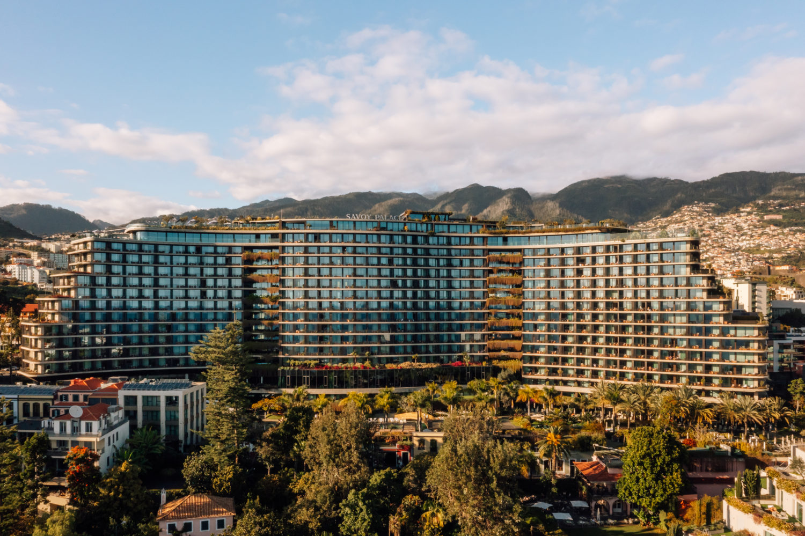

Three kinds of Madeira light.
One is a seriously good spa day. One starts with us making pastéis de nata and ends on a boat at sunset. One is a tiny restaurant hidden inside an old family home. Here is what each one would actually be like.



Start wherever your eye goes first.
A day at Laurea
A one-hour massage together, followed by as much time in the spa as we want.

It starts in the middle of Funchal.
Savoy Palace is the huge curved hotel we will have seen from half the city by then. The terraces face the sea; the green mountains stack up behind it. We are not staying there and we do not need to. Laurea welcomes outside guests, so we can walk in from Funchal, hand over the day and disappear downstairs.
Laurea Spa, Savoy Palace · Avenida do Infante 25 · open daily, 10:00–20:00 · for guests aged 16+
Downstairs, the forest takes over.
The reception is bright and polished, but the rooms beyond it become darker, greener and quieter. Laurea was designed around Madeira's Laurissilva forest: tree canopies appear overhead, bronze mesh catches the light and the floors follow the rings and roots of old trees.
That is what makes the scale feel interesting rather than corporate. It is 3,100 m² with thirteen treatment rooms, but every turn is meant to feel like moving further away from the city above.


For one hour, the room is ours.
I would book the Ultimate Aromatherapy Experience for both of us, side by side. It is a full-body massage using aromatherapy oils, with the therapist adjusting the pressure and mixing Swedish and neuromuscular techniques with lymphatic-drainage movements.
So it should be properly restorative, not just sixty minutes of nice-smelling oil while we wonder whether we are meant to talk.

Afterwards, we stay as long as we like.
A treatment of sixty minutes includes the full spa circuit. We can move between the sauna, steam room and jacuzzi, cool off under the sensory showers or at the ice fountain, then settle into the heated lagoon pool. When even that feels too active, there is a halotherapy salt room and a separate relaxation room with warm loungers.
There is no countdown after the massage and no second booking to rush towards. Laurea has been named Portugal's Best Hotel Spa in 2021, 2024 and 2025, but the reason I chose it is simpler: you love spas, this one is genuinely unusual, and we could spend the afternoon finding our favourite corner of it together.
We arrive from the middle of Funchal and come back out hours later feeling like the city has been somewhere else entirely.
Pastéis, then sunset
We make pastéis de nata in Funchal, then head west for a sunset trip on the water.

A table in Funchal, flour everywhere.
Queroo runs the class in a small kitchen at Centro Comercial Olimpo, not in a hotel demonstration room. It lasts about ninety minutes. We make the custard, press the pastry into the little tins and fill them ourselves before they go into the oven.
Queroo calls it one of its most popular Madeira food experiences, and I can see why. The useful part is learning how the custard and pastry actually work; the fun part is that we will almost certainly disagree about which of ours looks better.


When they come out blistered and golden, we sit down with Portuguese wine, eat some immediately and take the rest with us. Reviews tend to mention the host's food stories, the music and how relaxed the whole thing feels. It sounds less like a lesson and more like being invited into somebody's kitchen for an hour and a half.

Then we drive west.
I would book the later class, give us time to eat what we made, then head roughly an hour along the coast to Marina da Calheta. By then the kitchen part of the day is over and the light is starting to change.
This is our boat.
Gringo is not a stock yacht photo or one of those huge sightseeing catamarans. It is a Sea Ray 400 Sundancer carrying no more than twelve passengers, with shaded seating, a sun deck, cabin, bar, toilet and an outdoor shower.
We meet the On Tales crew at Calheta, step aboard and spend two and a half hours outside the harbour. Soft drinks and local beer are included, as are towels, blankets and snorkelling gear if the sea is calm enough for a swim.


Someone is already watching the water.
On Tales has someone watching from the cliffs with powerful binoculars and speaking directly to the crew. That cannot promise us whales or dolphins, but it means the boat is responding to what is actually happening offshore instead of following a fixed loop.
Whatever we find, the ride back is timed around sunset. We will have made something, eaten it, crossed the island and finished the day on the Atlantic. That is why this one feels like an adventure rather than two activities bundled together.
I mostly like the thought of us comparing our pastéis in the afternoon and ending up on the front of this boat a few hours later.
Queroo · Centro Comercial Olimpo, Funchal
On Tales · Marina da Calheta · sunset trip on Gringo
The secret garden
A hidden entrance, a drink in the garden, and either six or nine courses beside the open kitchen.
At first, it looks like the wrong address.
Gazebo has no restaurant frontage and no bright sign. We arrive at a residential door on Rua dos Ilhéus, ring the buzzer and wait to be let into Fazenda Margarida, the century-old family home of chef Filipe Janeiro's wife and partner, Adrianne Zino.
On the other side is a Madeiran garden full of flowers, herbs and fruit trees. If the weather is good, that is where the evening starts: a drink outside, the first snacks and none of the usual restaurant entrance.
Gazebo · Rua dos Ilhéus 30, Funchal · Tuesday–Saturday · reservation required

This room has lived several lives.
Adrianne's family built it in 1932 to receive friends. It later became an office, a gallery and an antiques space before Gazebo brought it back to its original purpose: people sitting together around food.
A lot of the furniture and objects stayed. The kitchen is completely open and only a few metres from the table, so we can see every plate being made. Filipe often brings dishes over himself and explains what came from the garden, what came from another island producer and why it is on the menu that night.


People remember the whole evening.
The plates are precise and the wine pairings get a lot of praise, but Gazebo never seems to lose the feeling of being invited into somebody's house. There are family antiques around us, banana leaves outside the windows and only about twenty-two guests.
Michelin includes Gazebo in its Madeira selection, and Guía Repsol awarded it one Sol in 2026.
On TheFork, more than 200 verified reviews currently average 9.5 out of 10. They keep coming back to the same things: surprising flavours, Filipe explaining the food himself, the intimate room and service that feels genuinely personal.
That is what made me choose it. The guides notice the cooking; people remember being welcomed into the house. Ringing an unmarked doorbell and ending up at this table feels like the kind of Madeira story we would still be telling afterwards.